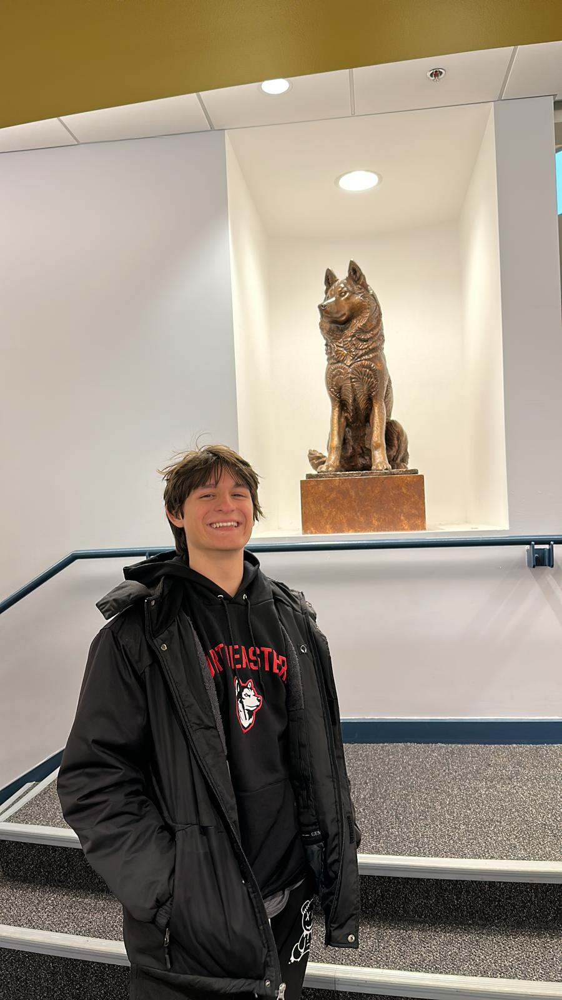

Portfolio · Northeastern '26
scroll to follow me down
Moved to Miami for middle & high school, then up to Boston for college and work. From beaches to palms to snow — the route keeps getting colder.
Joining Amazon Web Services as a full-time Software Development Engineer after graduation. Previously interned there as well.
And I automate everything I touch — Alexa skills, house-hunting bots, little apps for my favorite people. If a task repeats, it's getting scripted.

Hey — I'm Diego.
I'm a computer-science student at Northeastern, soon-to-be Software Development Engineer at AWS, and a builder at heart.
When I'm not shipping code, I'm on a snowboard, traveling somewhere new, or automating a problem nobody asked me to solve. The projects below are some of my favorites.
Joining AWS full-time post-graduation on the AFX GenAI Services team — building generative-AI tooling that scales across Amazon.
Designed and developed a professional website for Tipagos, a consulting firm helping Brazilian businesses establish and operate in the United States.
Visit Tipagos ↗Built a cloud-native inventory system on AWS with a multi-team Teamspace model, granular role permissions, a scalable DynamoDB PK/SK + GSI design, secure presigned S3 flows, and a React + TypeScript + tRPC + MUI front end for fast item management and real-time visibility.
Led a team of 5 — weekly meetings, code review, deduplication & structured storage, infrastructure rebuilds for faster, safer data loading and retrieval across the platform.
Visit Supply Trace ↗Built a scalable GenAI contract-extraction platform — React + SSO frontend, Lambda backend on Bedrock / Glue / S3 / DynamoDB. Cut manual effort by 80% and processing time from 3 hours to under 2 minutes.
Designed and developed an engaging, user-friendly website for a leading bank in Brazil — brand, build, and deploy.
Processed data for 2M+ users via the Productiv API, shipped a TypeScript pipeline that cut processing time 40%, and built QuickSight dashboards that helped drive up to $10M in cost savings.
Founded and scaled an online coding-tutoring platform — 1,000+ hours of personalized instruction for students ages 8–16, with a tailored curriculum and interactive exercises that made coding accessible.
Led a team of 15 instructors — $30K+ in monthly revenue (peaking at $70K+ during summer camps) through performance strategies, customer-experience improvements, and a collaborative team culture.
Developed Android applications in Java, XML, HTML, and CSS — integrating features, polishing UX and performance, and supporting testing & debugging to ship on schedule.
AI-powered paper-trading platform that analyzes markets, generates signals, and executes risk-validated decisions with a real-time portfolio dashboard.
↗Portfolio tracker that aggregates balances, analyzes performance, and surfaces real-time insights across multiple assets and wallets.
↗Task-management app with a 3D tree visualization of sprint progress — dark/light modes, Firebase integration, and team analytics.
↗Stock portfolio management system on Flask + React — charts, virtual portfolios, trade simulation, and news-sentiment analysis in one place.
↗Secure platform for hospitals to manage patient data and collaborate across providers, powered by Ruff — an AI assistant for medication, treatment, and care-protocol decisions.
↗AI-powered medical symptom analysis and call-handling system. Assesses symptoms through voice interactions using natural-language processing and sentiment analysis.
↗Automated discovery and analysis of real-estate listings with rich neighborhood data — web scraping, semantic search, and AWS (S3, EC2, IAM).
↗React frontend + Flask backend on AWS EC2 — sentiment analysis, emoji usage, and participation stats from your chat logs in an interactive visual format.
↗Educational website that teaches kids and beginners to code through interactive game-like elements, visual programming, and step-by-step tutorials.
↗A Python app that graphically demonstrates how various sorting algorithms work — dynamic visualizations make the mechanics tangible.
↗Standardizes company data, geocodes addresses, and detects similar companies by name and location across two geocoding and matching approaches.
↗Models the interactions between predators and prey, with graphical representations of population changes over time.
↗AI-driven simulation where agents must find and collect food to survive — manage movement and energy, return to base before running dry.
↗Simulates hospital room and patient management — admit and discharge, assign doctors, and maintain priority-based waitlists.
↗Automates build, test, validation, and deployment of a Java project end-to-end — including user-input validation and automatic deployment to GitHub.
↗An intuitive tool for coding beginners that simplifies complex concepts and provides an easy starting point for learning programming.
↗Efficient image-compression tool using seam carving for content-aware resizing — linked lists and maps power the optimized performance.
↗A cute project I made to ask my girlfriend to be my valentine ◡̈